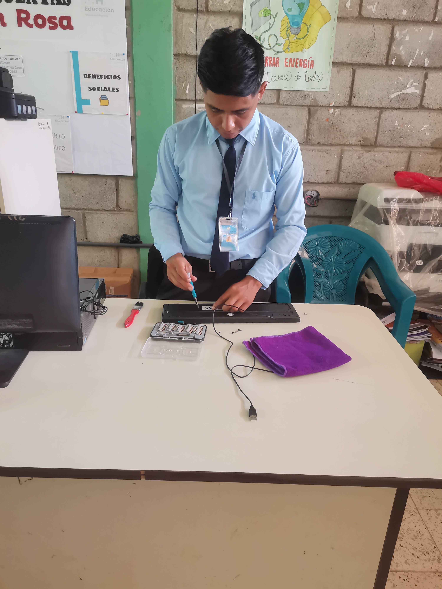
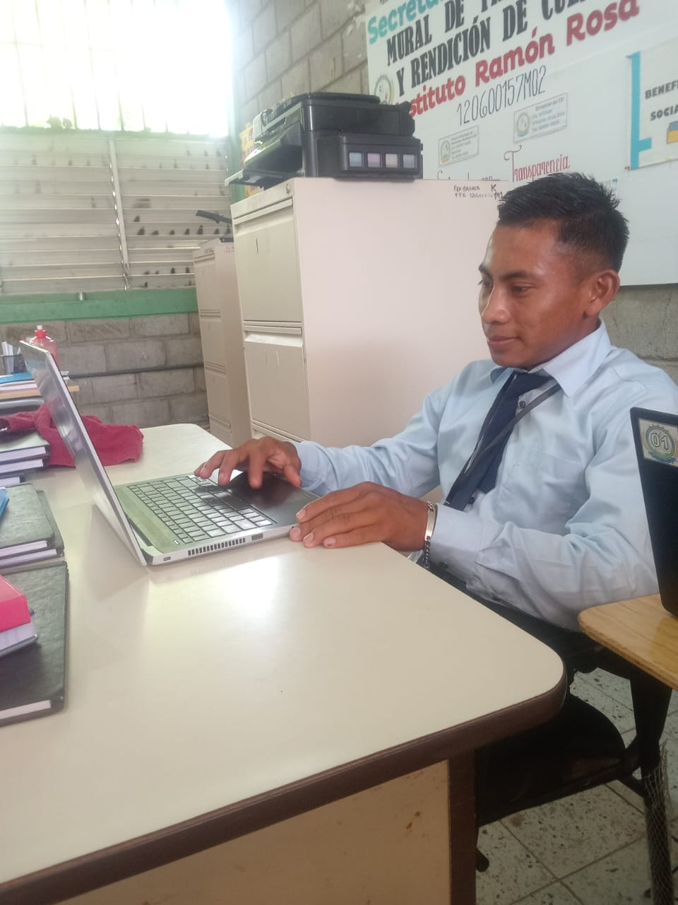
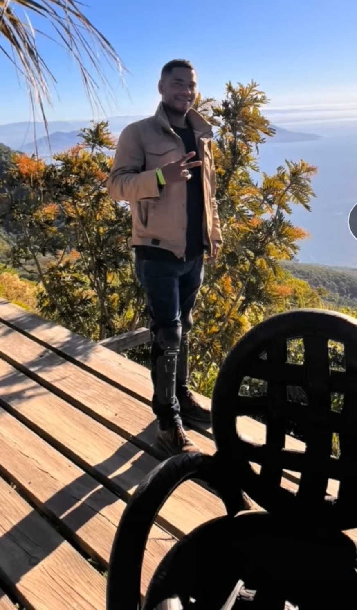

Amistad
Trabajos informáticos
Licenciado Daniel Enriquez
¿En qué consiste mi Práctica? consiste en desarrollar mis avilidades y conocimientos aprendidos durante varios meces el cual cirve para adquirir como funciona un mundo lavoral actual.tambien a como poder desembolverme en el area asignado con el jefe inmediato tambien en la participacion de en la creacion de en prueva y matenimientode aplicaciones ayudar al usuario en problemas recopilacion y analices de datos.